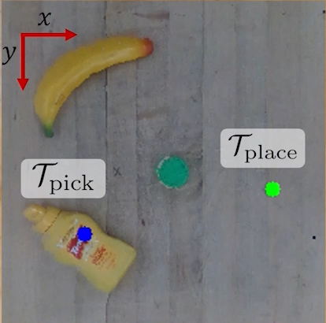
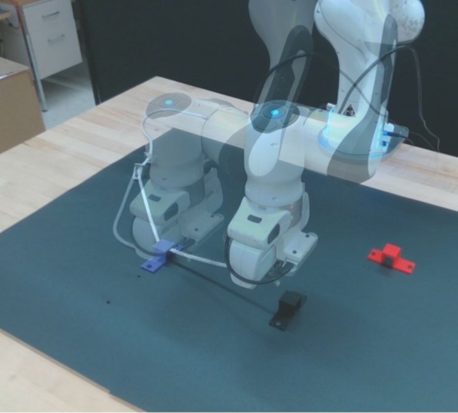
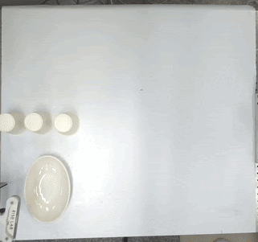
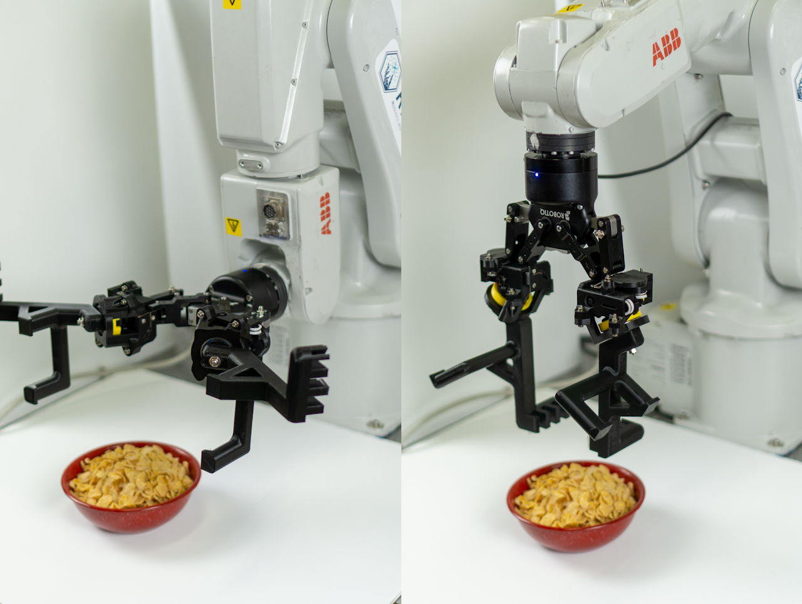
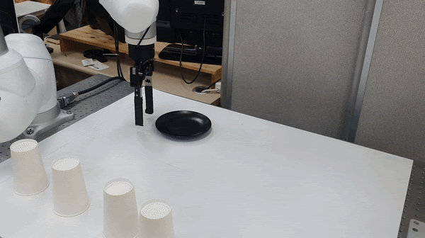

|
Youngjin Hong I am a PhD student in the Department of Electrical and Computer Engineering at University of Minnesota (UMN), advised by Prof. Changhyun Choi. My research lies at the intersection of robotics and machine learning, focusing on generative models for generalizable and precise robot manipulation. I am particularly interested in leveraging Vision-Language and Vision-Language-Action models to enable robots to reason about and interact with the physical world in a more flexible, human-like way. I conduct my research in the Choice Robotics Lab, which is affiliated with Minnesota Robotics Institute (MnRI). Before joining UMN, I was a research engineer at Hanwha Aerospace, where I developed business proposals for next-generation UGV technologies as well as UGV simulation. I completed my master's and bachelor's in Mechanical Engineering at Sungkyunkwan University (SKKU), advised by Hyungpil Moon. |
{kind=link}
Under Review & Research Ongoing |
|  |
LACY: A Vision-Language Model-based Language-Action Cycle for Self-Improving Robotic Manipulation
Youngjin Hong*, Houjian Yu* (Equal Contribution), Mingen Li, Changhyun Choi Under review arXiv | Project Page |
|  |
Hierarchical DLO Routing with Reinforcement Learning and In-Context Vision-language Models
Mingen Li, Houjian Yu, Yixuan Huang, Youngjin Hong, Changhyun Choi Under review arXiv | Project Page |
{kind=link}
{kind=link}
Publications |
|  |
Vision-based Stable 2D Planar Pushing of Dishware with 6-DOF Manipulator
Youngjin Hong, Hong-ryul Jung, Sungwon Seo, Jeongmin Jeon, Jonghyun Kim, Hyungpil Moon ECCOMAS, 2023 Paper | Project Page |
|  |
Passive Transformable Fingertip to Augment Tableware Grasp Capability
Haejoon Seong*, Youngjin Hong*, Hong-ryul Jung*, Myeongyun Doh* (Equal Contribution), Jonghyun Kim, Hyungpil Moon ICCAS, 2022 Paper | Project Page |
{kind=link}
{kind=link}
Talks and Presentations |

|
Bridging Language-Action Reasoning and Physical Execution in Robotic Manipulation
Youngjin Hong Invited Talk at Sungkyunkwan University (SKKU), 2025 Youtube |
|  |
Stable Dishware Pushing via Convolutional Neural Networks
Youngjin Hong, Sungwon Seo, Hong-ryul Jung, Jeongmin Jeon, Jonghyun Kim, Hyungpil Moon IROS, 2023 (Poster, Late Breaking Results) Project Page |
{kind=link}
Academic ServicesReviewer for IEEE Robotics and Automation Letters (RA-L), 2025 |